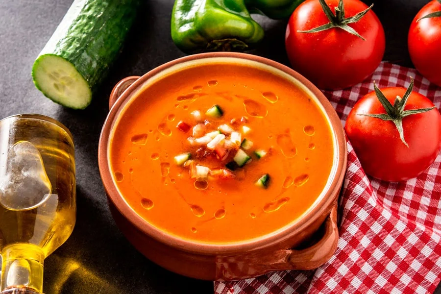

Volver al menú
Receta Gazpacho
En esta web vais a poder ver como hacer el mejor gazpacho paso a paso!!
Ingredientes (6 Pax)
Para hacer nuestro maravilloso gazpacho para 6 personas necesitaremos:
- 1KG de Tomate pera
- 1 Pimiento verde Italiano
- 1 Pepino
- 2 Dientes de Ajo
- 50ml de Aceite de oliva
- 50g de pan de hogaza
- 250ml de agua
- 5g de Sal
- 30ml de vinagre de Jerez
Paso a Paso de la Receta
- Dificultad: Media
- Tiempo de elaboración 15min
- Tiempo de reposo 1h
- Primer paso: Preparamos todos los ingredientes con las porciones indicadas

- Segundo paso: Cortamos todos los ingredientes con un tamaño adecuado para triturar

- Tercer paso: Trituramos todo hasta que quede con la textura de la imagen
- Último paso: Emplataremos y dejaremos reposar 1h antes de comerlo
Resultado Final
Una vez realizados todos los pasos anteriores ya habreis acabado la receta!! En la imagen podeis ver el resultado final de como os quedará si lo haceis bien!!

Volver al principio de la receta